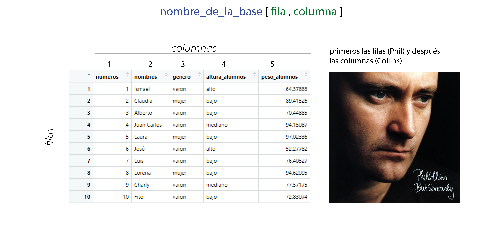

Chapter 4 Ambientes de trabajo y manipulación de variables (I)
4.1 Antes de empezar
Una parte importante del trabajo en estadística depende de la prolijidad y el orden. Cualquier proyecto debe seguir estos pasos antes de empezar:
- Cree una carpeta destinada sólo al proyecto estadístico
- Coloque el archivo de la base de datos (CSV, XLS, o el formato que prefiera en la carpeta)
- Cree un script vacío de R y guárdelo en la carpeta
- Establezca esa carpeta como su directorio de trabajo o working directory
4.2 Directorio de trabajo o Working directory
En ocasiones R tiene que buscar archivos en una carpeta (por ejemplo cuando queremos que “lea” una base de datos que tenes en Excel) y en otras ocasiones va a necesitar guardar datos en una carpeta.
El lugar en donde haga ello se llama directorio de trabajo o working directory.
Si establecemos ese directorio de trabajo en la carpeta que creamos antes de empezar, R va a poder leer los datos de allí y guardarnos los resultados en el mismo lugar. Al final del día vamos a tener, la base, el script y los resultados prolijos y ordenados en el mismo lugar.
Vamos a aprender como establecer ese directorio.
A través de una función: getwd(), en donde tenemos que especificar la ruta (esto puede ser realmente engorroso si tenemos muchas sub-carpetas, como el ejemplo)
getwd(~/Bookdown3/bookdown-demo-master/bookdown-demo-master)
La segunda alternativa es simple pero requiere que hayamos guardado el script previamente y se usa siguiendo los siguientes comandos de la barra de herramientas
4.3 Paquetes o librerías
Las funciones que podemos encontrar en R son limitadas. Sin embargo, R cuenta con una enorme comunidad que día a día desarrolla nuevas funciones. Estas funciones vienen empaquetadas en librerías, llamadas packages. Para utilizarlas las librerías deben ser instaladas en nuestro ordenador y activadas cuando sean necesarias (no se las activa todo el tiempo para no enlentecer a la máquina)
4.3.1 ¿Como instalar una librería?
Existen dos métodos para la instalación de librerías
Recuerde: la instalación de librerías es un proceso que sólo necesita realizar una vez, después bastará con activarla
4.3.1.1 Instalación de librería a través de RStudio
Es posible instalar las librerías a ser utilizadas a través del comando de menús de RStudio para ello hay que ir al menú Tool y seleccionar Install Packages, se abre un cuador de diálogo en donde debemos tipear el nombre de la librería
4.3.1.2 Instalación de librería a través de sintaxis
Se puede utilizar la funcion install.packages(nombre_de_la_libreria) para instalarla a través de la sintaxis
4.3.2 ¿Como activar una librería?
La activación de una librería se realiza mediante el comando library()
Importante: Este es un proceso que debe hacerse al inicio de cada script. Seleccionamos las funciones que queremos usar y activamos las librerías que las contienen para que esten disponibles, sino no podremos usar esas funciones
Bueno con todo esto en marcha vamos a empezar a trabajar…
4.4 De la base de datos a R
4.4.1 Metodo de ventanas para subir un dataframe a R
4.4.1.1 Datos desde Excel
En la ventana Environment podemos encontrar un menu de opciones Import Dataset, si hacemos clic en esa opción se abrirá un menú que nos permitira bajar datos desde excel

Este método presenta algunas ventajas la principal es que nos muestra una previsualización de la base de datos y como se asignará la clase a cada columnas y es posible cambiar las asignación haciendo varios clics

Una desventaja de este método es que no hay rastro de lo que hicimos en el script y puede que no lo recordes la próxima vez que encaremos la tarea.
Una solución inteligente es copiar el cçodigo que se va autoescribiendo en la ventana Code Previewy pergarlo en nuestro script. De esa forma siempre sabemos que ocurrió
4.4.1.2 Datos desde otros formatos
El mismo método permite importar datos desde archivos de texto (CSV) o archivos de datos de SPSS (.sav) u otros programas estadísticos (SAS y Stata)
4.4.2 Código para subir un dataframe a R
Las alternativas mas populares es a traves de la librería readxl
Un código de ejemplo sería así
library(readxl) data<-read_excel(“nombredelarchivo.xls”)
Si el archivo a utilizar no esta en la carpeta de trabajo hay que escribir la ruta hasta allí.
4.5 Manipulación de variables (I)
Una vez que hemos subido nuestro dataframe al programa la habilidad más importante que necesitaremos es la capacidad de manipular las variables.
En la siguiente sección aprenderemos como indicar en el lenguaje de R que necesitamos que se trabajen con ciertos datos.
El lenguaje basal de R posee un sinnumero de alternativas para manipular variables, nos limitaremos a ver las mas esenciales.
En la próxima sección seguiremos trabajando con la base de datos que creamos, si abordan esta sección sin haber leído las previas, o han limpiado su ambiente, por favor corran el siguiente código
numeros<-1:10
nombres<-c("Ismael", "Claudia", "Alberto", "Juan Carlos", "Laura", "José", "Luis", "Lorena", "Charly", "Fito")
genero<-c("varon", "mujer","varon","varon", "mujer","varon", "varon", "mujer","varon","varon")
altura_alumnos <- factor(c("alto", "bajo", "bajo", "mediano","bajo", "alto", "bajo", "bajo", "mediano","bajo"),
levels=c("bajo", "mediano", "alto"))
set.seed(123)
peso_alumnos <- runif(n=10, min=50, max=100)
mi_primera_base<-data.frame(numeros, nombres, genero, altura_alumnos, peso_alumnos)4.5.1 Métodos de selección de datos
4.5.1.1 El método $, “la dirección”
Dijimos que una forma de pedirle a R que nos devuelva un objeto se basa en escribir solamente su nombre.
Si tipeamos por ejemplo el nombre de la base:
mi_primera_base## numeros nombres genero altura_alumnos peso_alumnos
## 1 1 Ismael varon alto 64.37888
## 2 2 Claudia mujer bajo 89.41526
## 3 3 Alberto varon bajo 70.44885
## 4 4 Juan Carlos varon mediano 94.15087
## 5 5 Laura mujer bajo 97.02336
## 6 6 José varon alto 52.27782
## 7 7 Luis varon bajo 76.40527
## 8 8 Lorena mujer bajo 94.62095
## 9 9 Charly varon mediano 77.57175
## 10 10 Fito varon bajo 72.83074Nos devuelve la base.
El carácter $: funciona como una subdirección.
Cuando ponemos el nombre de un objeto seguido del signo, R espera el nombre de otro objeto contenido dentro de el (como si fuera una dirección, antes del $ escribimos el numero de la calle, y después el departamento).
Miremos este ejemplo
mi_primera_base$genero## [1] "varon" "mujer" "varon" "varon" "mujer" "varon" "varon" "mujer" "varon"
## [10] "varon"como vemos, R entendió que le pedíamos sólo genero, que está contenido en mi_primera_base. Este método (de dirección), es muy útil porque puede que este trabajando con dos bases en simultáneo con columnas del mismo nombre (por ejemplo genero). Entonces existen dos objetos genero pero únicos en su dirección.
El resultante de este método es un objeto, y podemos manipularlo.
Veamos un ejemplo de la vida real.
Queremos calcular la media del peso de los alumnos, la sintaxis sería más o menos así.
mean(mi_primera_base$peso_alumnos)## [1] 78.91238Como vemos la funcion mean() funcionó absolutamente igual que si le hubiéramos pedido que calculara la media del objeto peso_alumnos, sin que pertenezca a un dataframe
Este método de dirección es útil también para crear nuevas variables dentro del dataframe (siempre y cuando tenga el mismo largo que las otras columnas).
Probemos creando al azar una columna de edad. Para ello vamos a seguir los siguientes pasos:
1. Vamos a usar la función runif(), para crear numeros aleatorios, entre 10 y 30
2. le vamos a aplicar la función round() para que redondee esos números a enteros
3. Y vamos a escribir ese resultado en una columna edad directamente en el dataframe.
4. Después vamos a previsualizar los primeros 3 elementos del dataframe para ver que pasó.
Veamos como:
mi_primera_base$edad <- round(runif(n=10, min=10, max=30))
head(mi_primera_base)## numeros nombres genero altura_alumnos peso_alumnos edad
## 1 1 Ismael varon alto 64.37888 29
## 2 2 Claudia mujer bajo 89.41526 19
## 3 3 Alberto varon bajo 70.44885 24
## 4 4 Juan Carlos varon mediano 94.15087 21
## 5 5 Laura mujer bajo 97.02336 12
## 6 6 José varon alto 52.27782 28Hemos aprendido dos cosas, muchas funciones se pueden anidar simplemente con el uso de paréntesis como si se tratara de una operación matemática. La segunda, la màs importante: _ podemos utilizar el método de la direccion de $ para crear nuevas columnas_
Como funciona esto, si a R le damos una dirección dentro de nuestra base que no existe simplemente la crea.
Cuidado, si asignamos a una dirección existente nuevos datos, va a escribir estos en la dirección indicada borrando los anteriores
4.5.1.1.1 Ejercicios
Realicemos ahora algunas transformaciones de variables utilizando este método.
- Supongamos que en lugar de la edad de los sujetos, necesitamos el año en que nacieron. Para ello vamos a crear una nueva variable anio_nacimiento y le vamos a asignar la transformación de la edad al año.
mi_primera_base$anio_nacimiento <- 2021-mi_primera_base$edad
head(mi_primera_base)## numeros nombres genero altura_alumnos peso_alumnos edad anio_nacimiento
## 1 1 Ismael varon alto 64.37888 29 1992
## 2 2 Claudia mujer bajo 89.41526 19 2002
## 3 3 Alberto varon bajo 70.44885 24 1997
## 4 4 Juan Carlos varon mediano 94.15087 21 2000
## 5 5 Laura mujer bajo 97.02336 12 2009
## 6 6 José varon alto 52.27782 28 1993Como ven resolvimos el problema de una manera sencilla con las operaciones que vimos. Le pedimos a R que a 2021 le reste la edad de cada sujeto y los resultados los vaya guardando en la nueva variable. Una vez que nos acostumbramos a la sintaxis es muy sencillo transformar variables con este método.
Practiquemos un poco más:
- Tranformemos el peso de los alumnos en libras.
mi_primera_base$peso_enlbs <- mi_primera_base$peso_alumnos*2.20462262185
head(mi_primera_base)## numeros nombres genero altura_alumnos peso_alumnos edad anio_nacimiento
## 1 1 Ismael varon alto 64.37888 29 1992
## 2 2 Claudia mujer bajo 89.41526 19 2002
## 3 3 Alberto varon bajo 70.44885 24 1997
## 4 4 Juan Carlos varon mediano 94.15087 21 2000
## 5 5 Laura mujer bajo 97.02336 12 2009
## 6 6 José varon alto 52.27782 28 1993
## peso_enlbs
## 1 141.9311
## 2 197.1269
## 3 155.3131
## 4 207.5671
## 5 213.8999
## 6 115.2529- Imaginen que quieren dicotomizar la variable altura, y dividirla en los que son altos y los que no. Para ello podemos crear una variable a través de una función logica. Vemos que sencillo es:
mi_primera_base$alto_y_n <- mi_primera_base$altura_alumnos=="alto"
head(mi_primera_base)## numeros nombres genero altura_alumnos peso_alumnos edad anio_nacimiento
## 1 1 Ismael varon alto 64.37888 29 1992
## 2 2 Claudia mujer bajo 89.41526 19 2002
## 3 3 Alberto varon bajo 70.44885 24 1997
## 4 4 Juan Carlos varon mediano 94.15087 21 2000
## 5 5 Laura mujer bajo 97.02336 12 2009
## 6 6 José varon alto 52.27782 28 1993
## peso_enlbs alto_y_n
## 1 141.9311 TRUE
## 2 197.1269 FALSE
## 3 155.3131 FALSE
## 4 207.5671 FALSE
## 5 213.8999 FALSE
## 6 115.2529 TRUECreamos una variable lógica (que tambien funciona como una dictomica 0/1, recuerdan?)
4.5.1.2 El método “Phil Collins”
vamos a ver otro método de manipular datos y variables, este método es ligeramente màs flexible que el anterior.
¿Recuerdan la siguiente notación?:
genero | chr[1:10]
Esta era la forma de R de decirnos que se trataba de un objeto de 1 fila y 10 columnas, ¿no?.
Recordemos que siempre van primero las filas y después las columnas (mnemotecnia Phil Collins)
Con el mismo criterio podemos usar los corchetes como una dirección!!
Si una columna tiene 10 filas (o sea [1:10]), el contenido de esas 10 filas està etiquetado ( de arriba abajo) con valores del 1 al 10. A estas etiquetas las llamamos índices.
Cada valor de nuestro dataframe tiene entonces un ìndice propio de columna y de fila (una direcciòn para cada valor!!!)
De esta forma

Este mètodo nos permite seleccionar valores particulares. Veamos por ejemplo si quisieramos saber el nombre del tercer alumno de la base:
mi_primera_base[3,2]## [1] "Alberto"Como leemos esto: le pedimos a R que dentro de la base mi_primera_base nos devuelva el valor en la posición fila 3 y columna 2 (la de los nombres)
Por su simpleza este método es muy flexible.
Aclaración: Cuando dejemos uno de estos dos parámetros vacíos, R va a interpretar que le pedimos todos!
Veamos ahora si necesitaramos toda la columna nombres escribiríamos lo siguiente:
mi_primera_base[,2]## [1] "Ismael" "Claudia" "Alberto" "Juan Carlos" "Laura"
## [6] "José" "Luis" "Lorena" "Charly" "Fito"Tenemos los 10 registros de la columna nombres.
Si quisieramos los 5 primeros, por ejemplo
mi_primera_base[1:5,2]## [1] "Ismael" "Claudia" "Alberto" "Juan Carlos" "Laura"Recuerden que utilizabamos : para indicar, todos los valores de 1 a 5.
Este método funciona igual que el mètodo $ a la hora de aplicar funciones.
Veamos este ejemplo para calcular la media del peso (columna 5)
mean(mi_primera_base[,5])## [1] 78.91238Si subimos en el texto vemos que el resultado es el mismo con ambos métodos. Si leemos el código en voz alta sería algo así: “Calcular la media de todas las filas de la columna 5 de la base mi_primera_base”